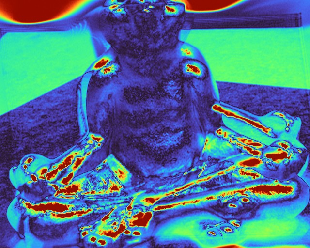

WACV 2027
Aligning Misaligned Benchmarks for Single-View Novel View Synthesis
Conventional protocols compare rendered views that do not match the ground truth world. We align each reconstruction to the ground-truth frame with image matching and PnP, then evaluate only co-visible pixels. Drag to compare error maps of the same Flash3D render.